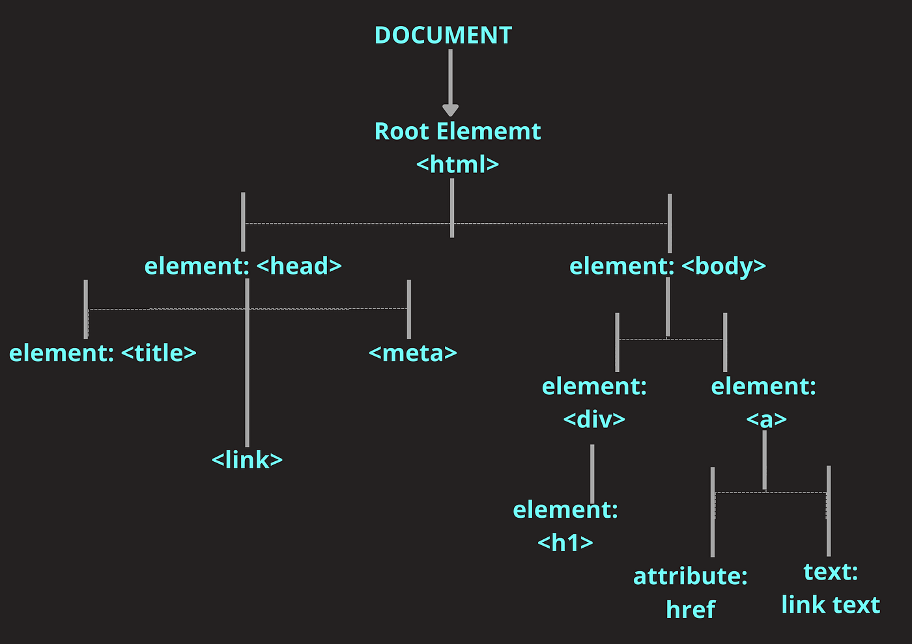

Definición
El DOM (Document Object Model) es una representación en memoria del documento HTML o XML. Es una estructura en forma de árbol donde cada nodo es un objeto que representa una parte del documento: etiquetas (<div>, <p>), atributos, texto, etc. JavaScript puede acceder y modificar este árbol para cambiar la página dinámicamente.
En términos simples: el DOM es la "interfaz" que permite a JavaScript ver y manipular la página web.
¿Para qué sirve?
- Leer y actualizar contenido (texto, atributos, estilos).
- Crear o eliminar elementos de la página.
- Responder a acciones del usuario con event listeners.
- Navegar y consultar la estructura del documento (padres, hijos, hermanos).
- Manipular formularios y validar datos en el cliente.
Prácticamente cualquier interacción dinámica en una web usa el DOM en algún nivel.
Ejemplos prácticos (interactivos)
1) Ingresar dato y cambiar texto:
2) Desaparecer y aparecer elementos:

3) Crear elementos y añadir a la lista:
4) Remplazar elementos:

5) DOM eventos:
Hola
2) Desaparecer y aparecer elementos:
3) Crear elementos y añadir a la lista:
4) Remplazar elementos:
5) DOM eventos:
Caja de ejemplo
Ejemplos de código
Estos fragmentos muestran patrones comunes de uso del DOM.
// Seleccionar un elemento por id
document.getElementById('miElemento')
// Seleccionar por selector CSS
const btn = document.querySelector('.mi-clase')
// Cambiar contenido
titulo.textContent = 'Nuevo texto'
// Añadir evento
btn.addEventListener('click', () => { /* ... */ })
// Crear y añadir elemento
const li = document.createElement('li')
li.textContent = 'Elemento nuevo'
lista.appendChild(li)
// Cambiar clases
element.classList.add('activo')
element.classList.toggle('oculto')
// Leer atributos
const src = img.getAttribute('src')
// Recorrer hijos
for(const child of lista.children){ console.log(child) }